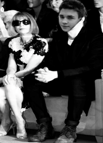
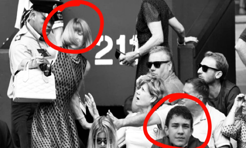

Who Could This Mystery Man Be?
Anna Wintour, editor-in-chief of Vogue since 1988, has been seen roaming around the streets of Bratislava with a mystery hunk.
She has been single since May, after she divorced with her ex Shelby Bryan. Could she have really moved on so fast or was this relationship the reason of their split?
People saying that her new mystery man must be from GJH as she was found walking around the area frequently. But after yesterday evening we know exactly who it is. It is none other than Andrej Simko, GJHs most eligible bachelor. Andrej has been described as a player and flirt. Many girls have fallen for his charm and Anna Wintour is no exception.
Andrejs classmates have been noticing a change in his behavior. Lea Geciova, his frenemy, said: "Lately he is always busy and always has somewhere to be. He also seems lovestruck. When I found out about new relationship, I was shook."
When asked about these rumors, both Anna and Andrej always deny it. But we know the true tea true and we ship it. It seems like they have a special affinity. What do you think of Annas new bae?